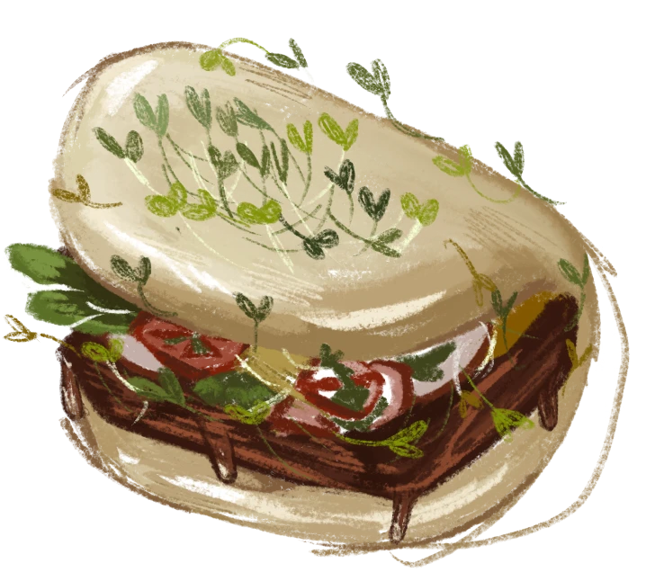

What are microgreens?
Young vegetable and herb plants, cut about 1–3½ weeks after planting, once their first leaves open. Unlike sprouts, they grow in a growing medium and are cut above the root, so you eat just the stem and leaves. Use them on salads, sandwiches, bowls or eggs.
